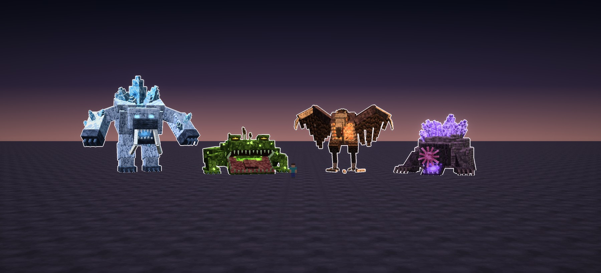
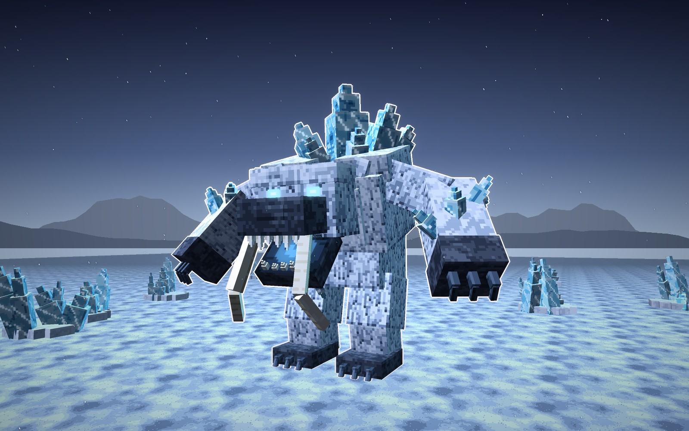
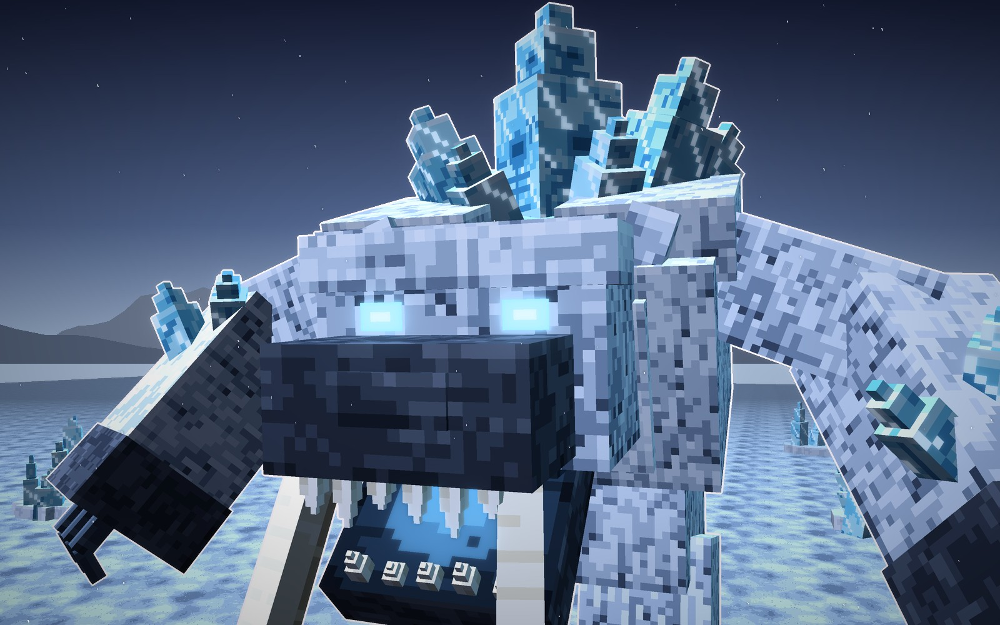
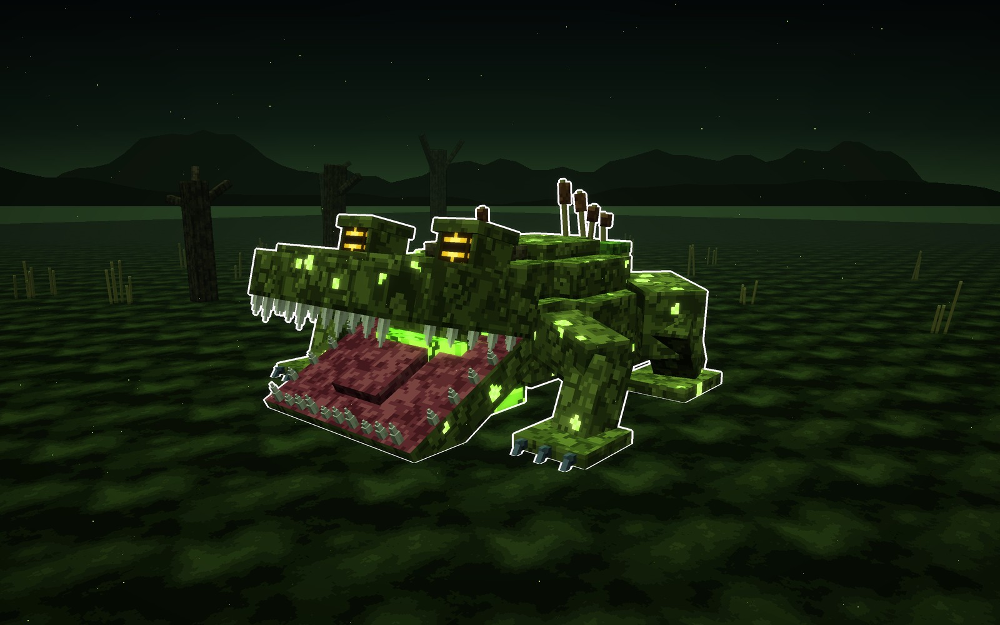
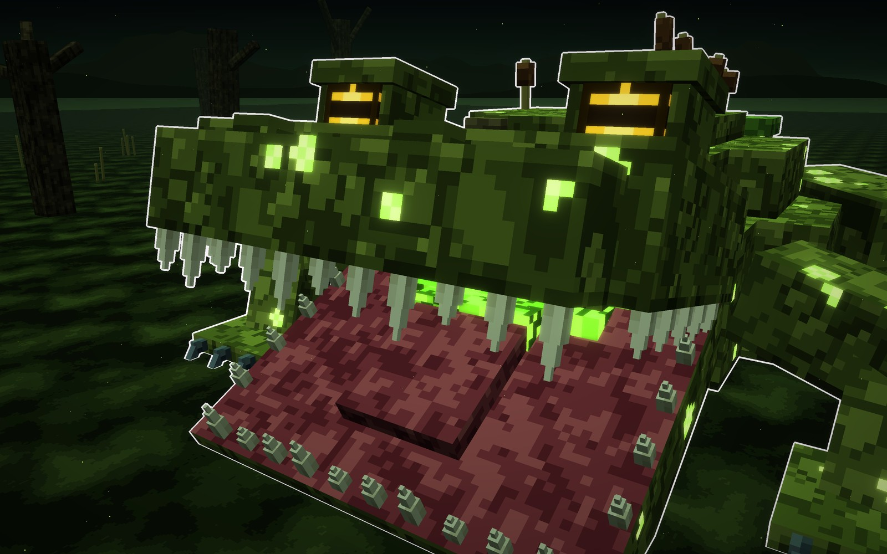
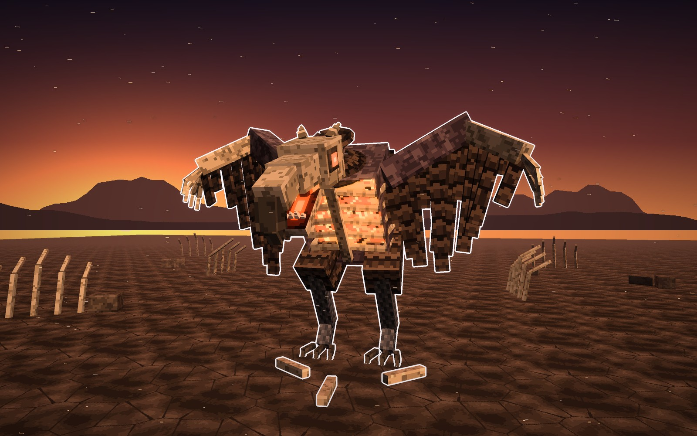
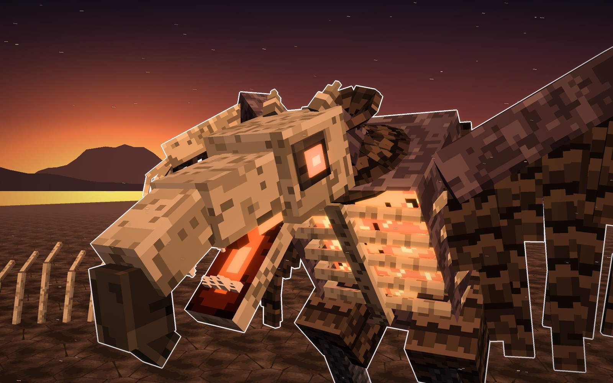
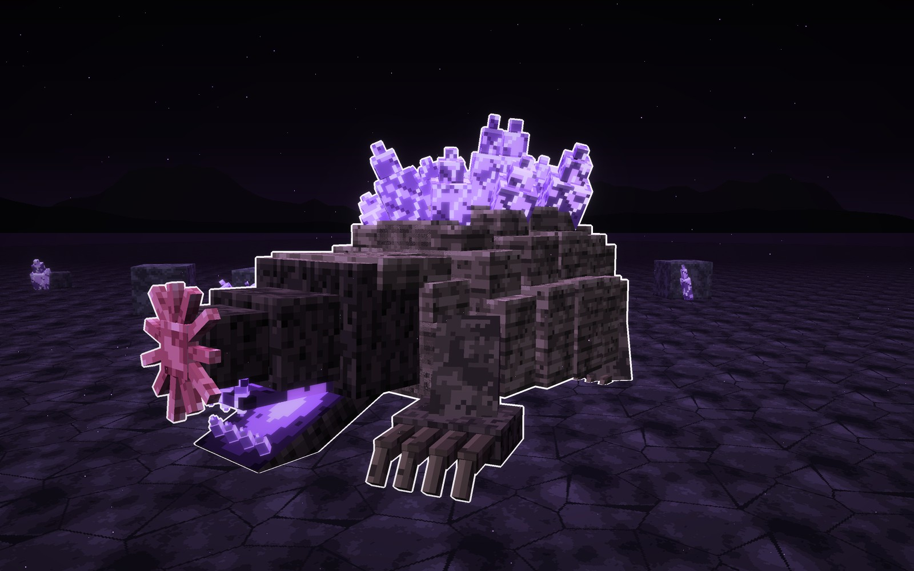
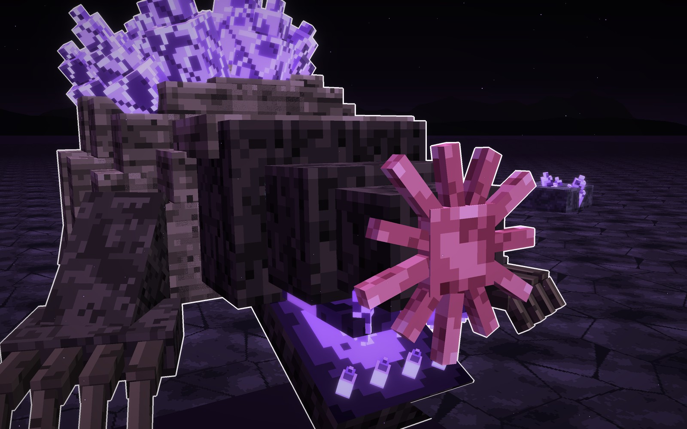
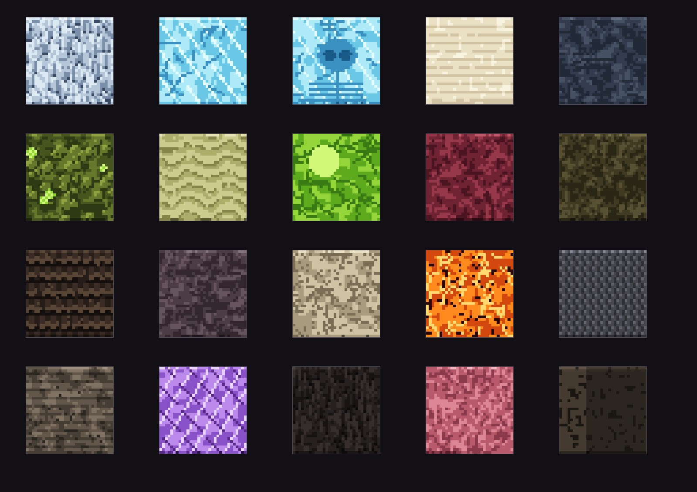

Cuatro jefes con los pies en el suelo: hielo, pantano, carroña y cristal. Como los de Dedsafio 4, cada uno es un monstruo que se entiende al momento, con una boca enorme por foco, pocas piezas gordas y la textura pintada a píxel grande. Nada de auroras, lunas ni soles.
Busqué los carteles oficiales de los tres jefes que lleva la edición (los enlaces, abajo del todo; aquí no uso ninguna imagen suya) y volví a mirar Ofidia y nuestra Espinara.
Un árbol retorcido con brazos de rama y, por cabeza, un capullo rojo que se abre en vertical: dientes blancos, luz magenta dentro y una lengua, con pétalos rosas detrás.
primer jefe · 26-09Una bestia de carne roja, medio dinosaurio, con una boca enorme llena de dientes, ojos amarillos, púas de hueso en la cabeza y el lomo, y garras y cola de hueso.
segundo jefe · 03-10Una sierpe de tambores de piedra con señuelos de pez abisal, capucha y las fauces encendidas por dentro; a su alrededor, los presos fantasma.
tercer jefe · 10-10Guarida: el Glaciar de los Huesos
Un bruto de pelo blanco que anda erguido, con cabeza de morsa y dos colmillos de marfil. En el lomo le crece un glaciar entero, y dentro del cristal más grande se ven, congelados, los huesos de lo último que cazó. Cuando ruge, la boca le brilla azul: echa frío.


En peleaecha frío por la boca; si le rompes los cristales del lomo se debilita, y los huesos que tenía congelados caen al suelo.
Guarida: la Ciénaga que Respira
Ancha y baja como un sapo, con cabeza de caimán y una boca que se abre de lado a lado. Tiene la piel llena de verrugas, y alguna pústula brilla verde. Bajo la garganta le cuelga un saco que se ilumina cuando va a escupir. En el lomo le crece la ciénaga, con musgo y juncos.


En pelease hunde en el fango y solo asoman los ojos; cuando el saco se enciende, escupe veneno, y con la boca abierta se le puede pegar en la lengua.
Guarida: el Campo de los Huesos Limpios
Medio buitre, medio chacal: anda encorvada sobre patas de ave y abre unas alas de plumas rotas. Tiene la cabeza pelada, como un cráneo, y un pico ganchudo con dientes de sierra. Lleva el pecho abierto, y entre las costillas le arden brasas: ahí se cocina lo que se come.


En peleada vueltas y baja en picado; lo que se come no la cura, pero le aviva las brasas y pega más fuerte, y las brasas del pecho son su punto débil.
Guarida: la Cueva que Canta
Una topa del tamaño de una casa, acorazada en bandas como un armadillo, con drusas de amatista que le asoman entre banda y banda. Cava con dos palas de cuatro uñas. No ve casi nada, pero tiene una nariz de estrella que te encuentra igual. Cuando abre la boca, los dientes son de cristal.


En peleacava y sale debajo de ti; agacharse no sirve, porque la nariz te encuentra; si le rompes las drusas, se queda sin aviso y sin coraza.
Juntos y con un jugador delante (1,8 bloques). De alto: Yelmora 15 con el glaciar, Cienara 7, Osaria 10,5 y Geodra 9. Novilis, para comparar, mide 11,5 hasta el yelmo: estos van en la misma liga, no en la de Boreala.
Cada caja lleva sus seis caras pintadas a medida, a 8 píxeles por bloque, con la luz arriba y la sombra abajo como en una textura de entidad: pelo en mechones, hielo con facetas, verrugas con pústulas, plumas en filas, coraza en bandas, amatista… Todo dibujado aquí; nada de vanilla ni de bloques.

Le parecieron bien (12-10-2026): «no excelentes como Ofidia ni como Espinara, pero me gustaron sus diseños, no están nada mal». Se guardaron como bichos normales, no como jefes.
Referencias (solo estudio, sin usar sus imágenes): Qumara · el Gran Observalador · Ofidia. Bocetos: materiales/generadores/bestias_modelo.py y bestias_escenas.py.